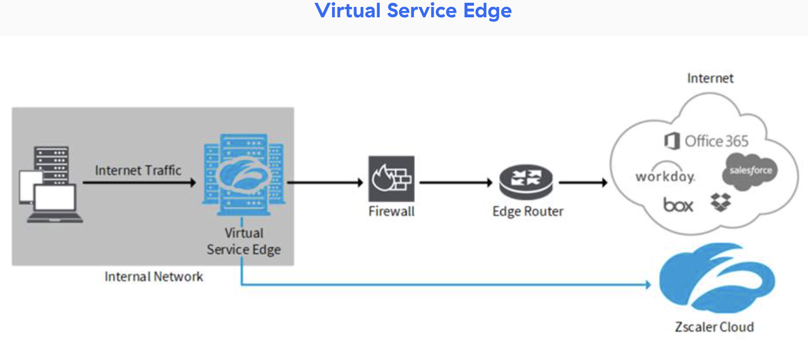
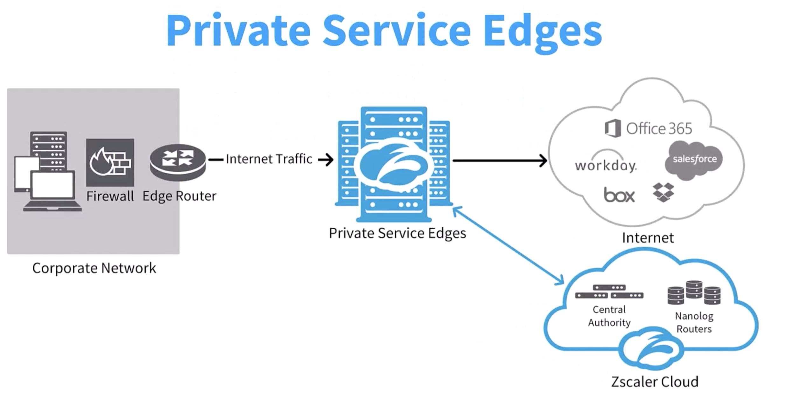
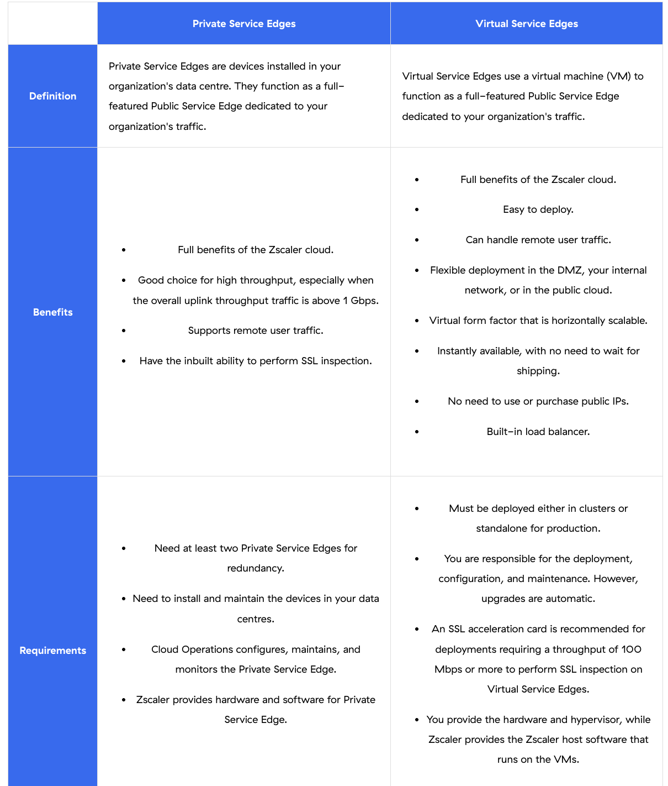
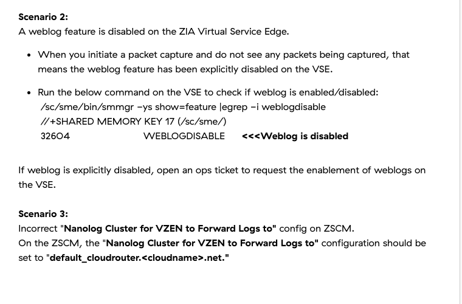
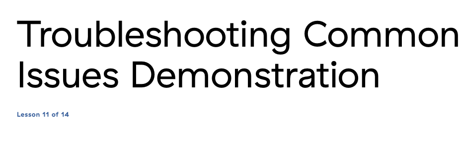

A customer-deployed VM that runs the full Zscaler Public Service Edge — and the issues that come with it
"VSE puts a full ZIA cloud node inside your data centre — same policies, same inspection, same logging — for organisations that need source IP, geolocality, or low latency to nearby SaaS."
💭THINK FIRST · WHY DEPLOY VSE AT ALL?
A Public Service Edge handles the same inspection in dozens of cloud locations worldwide — automatically scaled, automatically patched. Yet some customers pay extra to run a VSE inside their own data centre. What is so important to those customers that the operational overhead is worth it?
What four customer requirements force the choice of a VSE over a Public Service Edge — and which of them cannot be satisfied by source-IP anchoring instead?
Zscaler doesn't require access to a customer's Virtual Service Edge. Why is that an important policy from a trust and operational-model perspective?
Q1 — MODEL ANSWER
The four requirements: (1) geopolitical / regulatory — traffic must stay in-country; (2) high latency from users to the nearest Public Service Edge; (3) applications expecting a forwarded IP as the source IP — typically legacy SaaS that geo-fences on IP; (4) localized content the user must appear local to. Source-IP Anchoring solves (3) and partially (4) by sticking a known egress IP onto traffic — but it can't move the inspection engine closer to the user, so it doesn't solve (1) or (2). Note: Source-IP Anchoring is NOT supported with Virtual Service Edges, so if you deploy VSE you're committing to its inspection path for that use case.
Q2 — MODEL ANSWER
Zscaler explicitly does not require management access to a customer-deployed VSE — your org has full access for monitoring and configuration, but Zscaler stays out. That preserves the security boundary: a compromise on the Zscaler side cannot pivot into your data centre. It also fits the operational model — VSE is a customer-managed extension of the Zscaler cloud running your policies that Zscaler distributes via the ZIA Admin Portal, with Zscaler Cloud Operations performing automated, non-intrusive software upgrades and security updates.
SECTION 1
What VSE is and when it's the right answer
A Virtual Service Edge (VSE) is a customer-deployed VM that functions as a full-featured ZIA Public Service Edge dedicated to your traffic. VSEs are part of the Zscaler cloud — they pull policy updates, send logs to the Nanolog, and authenticate users through the ZIA Admin Portal, exactly like Public Service Edges. You define policy once in the ZIA Admin Portal; after users authenticate, the Zscaler service applies their policies whether they connect to an on-prem VSE or to a Public Service Edge anywhere in the world.

VSE sits inside the customer's internal network: internet traffic is forwarded to the VSE, which inspects against the customer's ZIA policy, then egresses via the local firewall/edge router to SaaS or the open internet. A separate management plane keeps the VSE in sync with the Zscaler cloud.
When organisations choose VSE
Zscaler may approve extending its patented cloud architecture to a VSE when one of these specific requirements applies:
REQUIREMENT 1
Geopolitical / regulatory
Traffic must be inspected inside a specific jurisdiction.
REQUIREMENT 2
Latency to PSE too high
User location has high latency to the nearest Public Service Edge.
REQUIREMENT 3
Source-IP-dependent app
An application requires the organisation's own IP as the source IP.
REQUIREMENT 4
Geolocal content
Users need to access location-specific content.
What VSE gives you operationally
Retains your organisation's source IP when accessing SaaS / Internet apps that require it.
Lets users access geolocal content.
Fully managed by Zscaler Cloud Operations — automated, non-intrusive, periodic software upgrades and security updates.
All transactions are still logged in the Nanolog and viewable via the ZIA portal + analytics.
!
UNSUPPORTED ON VSE
The Source-IP Anchoring feature is NOT supported with Virtual Service Edges. If a customer chooses VSE, traffic for source-IP-sensitive apps must use the VSE's egress IP, not an anchored egress IP. Plan deployments around this — it shows up on the exam and in real engagements.
🧠
MENTAL NOTE
VSE = customer-deployed VM running a full Public Service Edge. Four reasons to choose it: geopolitical / latency / source-IP / geolocal. Source-IP Anchoring is NOT supported with VSE. Zscaler does not require access to customer VSEs — fully managed by Cloud Ops via auto-upgrades. Policy is defined once in ZIA Admin Portal and applied identically on Public Service Edges and VSEs.
ASK A QUESTION
ADD A NOTE
💭THINK FIRST · PRIVATE vs VIRTUAL
Private Service Edges and Virtual Service Edges both put a dedicated Public-Service-Edge instance inside customer infrastructure. PSE is hardware; VSE is a VM. Why do customers still pick PSE in the cloud era, and where does each one win?
PSE requires at least two appliances in customer data-centre racks; VSE runs as a VM with an AS_SSL accelerator add-in for SSL inspection. Why is the SSL inspection story so different between the two?
Q1 — MODEL ANSWER
PSE is purpose-built hardware with built-in SSL acceleration — it can decrypt and inspect at full link speed without offload. VSE is a VM running on the customer's hypervisor, which means it inherits the host's CPU and crypto capabilities; for high SSL inspection throughput Zscaler recommends the AS_SSL accelerator, designed for ~50 Mbps with full inspection per VM. The throughput tradeoff is the price for the operational simplicity of running on commodity infrastructure.
SECTION 2
Private Service Edge vs Virtual Service Edge

Private Service Edges installed in the customer's data centre. PSE handles internet traffic for the corporate network and links back to the Zscaler cloud's Central Authority and Nanolog Routers.
Both PSE and VSE function as full-featured Public Service Edges dedicated to one customer's traffic. They differ in form factor, requirements, and operational responsibility:

The comparison table you should know by heart. PSE = customer-installed appliances, customer maintains, 2 minimum for redundancy. VSE = VM, easy to deploy, can be horizontally scaled, instantly available with no need for shipping, no need to purchase public IPs, includes a built-in load balancer; AS_SSL accelerator recommended for SSL inspection (~50 Mbps full inspection per VM throughput).
What you need to remember
PSE — needs at least 2 appliances for redundancy; you install/maintain them; Zscaler Cloud Ops configures, maintains, and monitors the PSE software; Zscaler ships the hardware.
VSE — VM only; deploys in the DMZ; horizontally scalable; built-in load balancer; instantly available, no shipping, no purchase of public IPs. AS_SSL accelerator recommended for SSL inspection at ~50 Mbps full-inspection throughput per VM. You provide the cluster IP, subnet mask, default gateway.
🧠
MENTAL NOTE
PSE = hardware (≥2 per site, customer racks them). VSE = VM (horizontally scalable, built-in LB, no shipping). For full SSL inspection on VSE: AS_SSL accelerator, ~50 Mbps per VM. VSE manages Public Service Edge software automatically; customer just provides cluster IP / subnet / gateway. Both share one policy via the ZIA Admin Portal.
ASK A QUESTION
ADD A NOTE
💭THINK FIRST · CLUSTER OF SIXTEEN
A VSE cluster supports a maximum of 16 VSE instances. Why cap it there, and what does the cluster boundary do for the operational model?
What's the practical reason for grouping VSEs into a cluster behind a single virtual IP rather than letting clients hit them directly?
Q1 — MODEL ANSWER
Clients need a single, stable IP target so PAC files / DNS / firewall rules don't have to know about every VSE instance. The cluster's virtual IP fronts a built-in load balancer that distributes sessions to active VSEs and routes around failed ones, giving you horizontal scaling and HA from the client's perspective. Capping at 16 keeps cluster control-plane chatter, health checks, and policy sync predictable; if you need more capacity, build more clusters.
SECTION 3
Deploy a VSE cluster — the steps
To get a VSE running, Zscaler admin reviews your requirements; Zscaler then approves and deploys the VSE. Customer-side, the workflow in the ZIA Admin Portal is:
1
PROVISION
Download installer + SSL certificate
Admins define VSEs the same as Public Service Edges. Administration → Virtual Service Edges → download the installer for your platform (Hyper-V, KVM, VMware), download the SSL certificate, then download the SNMP MIB files. Note SSL cert and installer are platform-specific.
2
DEPLOY VM
Install the VM onto your hypervisor
After installation, the VSE instance shows up in the Virtual Service Edges page. Each VSE instance has its own SSL Certificate column you can re-download if needed.
3
FORM CLUSTER
Virtual Service Edge Clusters → Add Cluster
A VSE cluster can contain a maximum of 16 VSE instances. Click Add Virtual Service Edge Cluster → name, enable status, select instances, enter cluster IP, subnet mask, default gateway. Save. The cluster appears in the Virtual Service Edge Clusters page.
4
DIRECT TRAFFIC
Point clients at the cluster VIP
Update PAC files / GRE / IPsec tunnel destinations to the cluster's VIP. The built-in load balancer fans traffic across active VSEs. Policies are downloaded from the ZIA Admin Portal automatically.
i
LOGS REQUIRED FOR TROUBLESHOOTING
If you open a Zscaler Support case on a VSE, you need to attach: zscaler.log from /sc/sme/log/ and /sc/smlb/log/, and autoupgrade.log from /sc/update/log/. Bundle these on every escalation.
🧠
MENTAL NOTE
Cluster max = 16 instances. Cluster needs cluster IP / subnet / gateway. Required ZIA portal path: Administration → Virtual Service Edges → Clusters. Log paths for Support: /sc/sme/log/zscaler.log · /sc/smlb/log/zscaler.log · /sc/update/log/autoupgrade.log. SSL cert is platform-specific and per-instance.
ASK A QUESTION
ADD A NOTE
💭THINK FIRST · UC #1 — POLICIES NOT GETTING APPLIED
Traffic is passing through the VSE, but the policies you defined in the ZIA Admin Portal aren't being applied. The VSE downloads policy from Zscaler periodically — so where does this break down?
The sudo vzen troubleshoot connection output shows cloud-config: Suspicious. What does "Suspicious" actually mean, and is that the root cause or a symptom?
Q1 — MODEL ANSWER
"Suspicious" means there was at least one disconnection to the Zscaler Certificate Authority (CA) in the last two hours — the VSE momentarily lost the ability to download policy / verify identity. It's a symptom, not a root cause: the underlying cause is a network or firewall issue between the VSE and the Zscaler CA. "Not Present" is worse — the VSE cannot reach the CA at all. The fix is to verify outbound network reachability (DNS, firewall, proxy) and confirm cloud-config returns to Stable; until it does, policy stays stale.
USE CASE 1
Policies not getting applied when traffic is passing via VSE
Problem: You are passing traffic via the VSE, but the configured policies are not getting applied to your traffic.
1
LOCATE
Confirm the policy doesn't fire on test traffic
Create a fresh Block policy in the ZIA Admin UI. Wait a few seconds for the VSE to download. Try the blocked website. The website is still allowed → policy is not propagating to the VSE.
2
ISOLATE
Run vzen troubleshoot connection on the VSE
SSH to the VSE and run sudo vzen troubleshoot connection. In an ideal state, the cloud-config section shows Stable. If you see Suspicious → at least one disconnect to the Zscaler CA in the last 2 hours. Not Present → VSE can't reach the CA at all to download policies.
3
DIAGNOSE
Restore CA connectivity
Verify DNS resolution and firewall rules permit outbound to the Zscaler CA endpoints, restart the VSE / vzen service if needed, then re-run sudo vzen troubleshoot connection until cloud-config = Stable. Policy download resumes automatically when the connection is healthy.
First diagnostic for VSE policy issues: sudo vzen troubleshoot connection. cloud-config states = Stable (good) · Suspicious (≥1 disconnect to Zscaler CA in last 2 hours) · Not Present (cannot reach CA at all = no policy download). Fix outbound network to Zscaler CA before chasing anything else.
ASK A QUESTION
ADD A NOTE
💭THINK FIRST · UC #2 — TRAFFIC IS FINE, LOGS ARE MISSING
The VSE is processing user traffic and the right policies are applying — but transactions never show up in Web Insight Logs. If traffic works, why would logs disappear?
The smmgr output shows WEBLOGDISABLE with value 32604. What does this single feature flag tell you, and why might Zscaler ship VSEs with weblogs deliberately disabled?
Once you've ruled out the WEBLOGDISABLE flag, what's the second suspect — and why is it about a config name rather than the VSE itself?
Q1 — MODEL ANSWER
It tells you weblogs have been explicitly disabled on this VSE — usually because of regulatory or privacy requirements at the customer site (data residency, sensitive industry), or because the customer is intentionally pushing logs to a different destination. The fix isn't to flip a CLI switch yourself — open an Ops ticket to request enablement, because the disable is often deliberate.
Q2 — MODEL ANSWER
Check the ZSCM-side configuration: "Nanolog Cluster for VZEN to Forward Logs to" must be set to default_cloudrouter.<cloudname>.net. If the value is wrong, the VSE is dutifully forwarding logs — to the wrong destination — and they never land in Web Insight Logs. The issue is configuration, not the VSE process. Always validate this string before raising a logging case with Support.
USE CASE 2
Logs of traffic processed by VSE are not seen on Web Insight Logs
Problem: VSE can process the traffic and apply the correct policies, but the logs are not visible in the Web Insight Logs.
1
LOCATE
Take a packet capture on the VSE
Initiate a pcap. If you don't see any packets being captured, the weblog feature has been explicitly disabled on the VSE.
2
ISOLATE — Scenario A
Check WEBLOGDISABLE flag with smmgr
Run the smmgr feature-show command and grep for weblogdisable. If you see WEBLOGDISABLE with a value, weblogs are off. Open an Ops ticket to request enablement on the VSE — do not flip the flag manually.
3
ISOLATE — Scenario B
Verify the Nanolog Cluster string on ZSCM
Check ZSCM for "Nanolog Cluster for VZEN to Forward Logs to". The correct value is default_cloudrouter.<cloudname>.net. If anything else is set, logs are routed away from Web Insight Logs.
4
DIAGNOSE
Decide which side to escalate
Scenario A → open Zscaler Ops ticket to enable weblogs (often deliberate). Scenario B → correct the cloudrouter string on the ZSCM and wait for sync.

Output of the smmgr feature-show command. WEBLOGDISABLE appears with value 32604 — confirming weblogs are explicitly disabled on this VSE. Don't try to flip it locally; raise an Ops ticket.
Logs missing but traffic OK = two suspects. Scenario A: WEBLOGDISABLE feature flag set on VSE (smmgr feature-show |grep WEBLOGDISABLE) → open Ops ticket, don't toggle manually. Scenario B: wrong "Nanolog Cluster for VZEN to Forward Logs to" config on ZSCM — must be default_cloudrouter.<cloudname>.net.
ASK A QUESTION
ADD A NOTE
💭THINK FIRST · UC #3 — VIP DOWN ACROSS THE CLUSTER
A customer has VZEN 1 and VZEN 2 in a cluster (Master-Backup) on ESXi. Users can't reach the internet through the VIP. smmgr -ys show=smlbclusters shows BOTH VZENs in backup state. There's no master. How does that happen, and what's the symmetric way to fix it?
Why would BOTH cluster members elect themselves as backup? What does that tell you about the heartbeat / cluster-keepalive path?
Two scenarios appear in the troubleshooting flow — TCP 9431 blocked by an intermediate firewall, and VZEN running on very old build. Why are those the most common root causes for VIPless-clusters, and how do you tell them apart?
Q1 — MODEL ANSWER
Both VZENs going to backup means each one failed to see heartbeats from the other and from the SMBA peer over the cluster keepalive channel. Without a master election, neither node owns the VIP — so traffic to the VIP has nowhere to land. The cluster control path is broken between them or to SMBA; the data path may be fine. This is almost always a network or version problem, not a workload problem.
Q2 — MODEL ANSWER
Cluster control uses TCP 9431. If an intermediate firewall blocks that port, neither node can see the other's keepalives, so both fall to backup. Open a pcap on both VZENs and confirm TCP 9431 is reaching them — if the TTL on RST packets is ~62, an intermediate device is killing the connection. The second scenario is that the VZEN is running on a very old build that has a known bug — the fix is to force-upgrade by running the upgrade script against the latest build. Tell them apart by checking the build first; if it's current, escalate to the firewall.
USE CASE 3
Internet not accessible through VIP while using VZEN 1 and VZEN 2
Problem: Customer has VZEN 1 and VZEN 2 deployed in a Master-Backup cluster on ESXi. Users are unable to access internet using the VIP IP. Running /sc/smlb/bin/smmgr -ys show=smlbclusters on both VZENs shows both in backup state.

The four-phase scenario card. Problem → Locate → Isolate → Diagnose. Both VZENs in backup state = nobody owns the VIP, so internet access via the cluster IP fails.
1
LOCATE
Confirm both nodes are in backup
SSH to both VZENs. Run /sc/smlb/bin/smmgr -ys show=smlbclusters. If both report backup, neither owns the VIP and the issue is at the cluster control plane.
2
ISOLATE
Two root causes — firewall vs old build
The cluster keepalive uses TCP 9431 between the VSE and the SMBA peer. Two reasons it might fail: (1) intermediate firewall is blocking TCP 9431; (2) VZEN is running on a very old build with a cluster bug.
3
DIAGNOSE — Firewall
Validate IPs, ports, protocols and SMBA reachability
Verify IPs / ports / protocols required for the customer's perimeter device. Collect a packet capture on the management + service interfaces of the VSE and analyze for RST packets. RST packets with TTL ~62 indicate an intermediate firewall is killing the TCP 9431 stream. Open pcap-side-by-side on both VZENs; look for the cluster heartbeats; check the Time-To-Live on the RST.
4
DIAGNOSE — Old build
Force-upgrade the VZEN
Run pcaps on management + service interfaces. If you see the CA resetting connections after successful TCP and SSL handshakes, you're upgrading. Method 1: run upgrade-script sudo /sc/update/run_mgmt.sh 0 — if normal run silently completes, you're done; otherwise tail -f /sc/update/log/autoupgrade.log. Method 2: force-upgrade to latest build via sudo vzen force-upgrade — shows real-time progress.
i
WHY TTL ~62 IS THE FINGERPRINT
Linux defaults TTL to 64 for outgoing packets. After one intermediate hop (a firewall doing TCP RST injection on policy block) decrements TTL and re-emits the RST, you see the reset arrive at the VSE with a TTL ~62 instead of the expected ~64. That two-hop drop in TTL is the smoking gun pointing at an in-line firewall rather than a peer-issued reset.
🧠
MENTAL NOTE
Both VZENs in backup state = no VIP master → internet via cluster IP fails. Diagnostic command: /sc/smlb/bin/smmgr -ys show=smlbclusters. Cluster control port = TCP 9431. RST with TTL ~62 = intermediate firewall blocking. Fix paths: (a) open the firewall for 9431; (b) force-upgrade VZEN via sudo vzen force-upgrade if old build.
Analogy
Both VZENs going to backup is like two co-pilots in separate cockpits who can't hear each other over the radio — each one assumes the other is flying the plane, so neither takes the controls. The radio (TCP 9431) might be blocked by a stationmaster (firewall) cutting the call short, or the radio itself might be a 30-year-old model the airline never upgraded (old build). Either way, the plane has no pilot until you restore the channel.
📷 A1.png — add this image to the folder
Three-panel cartoon: Panel 1 labelled "Healthy Cluster" shows two side-by-side cockpits ("VZEN 1 — Master", "VZEN 2 — Backup") with a clear radio wave between them labelled "TCP 9431 keepalive"; one pilot has hands on controls. Panel 2 labelled "Firewall Block" shows a stern stationmaster figure with a STOP sign cutting the radio wave between the cockpits; both pilots wear confused hats and label boxes overhead read "Both → BACKUP"; tag "TTL ~62 on RST". Panel 3 labelled "Old Build" shows the same two cockpits but with a vintage radio labelled "Old build" emitting static; a small caption "Run sudo vzen force-upgrade". Modern flat cartoon style, minimal text labels only where needed, educational infographic feel, modern tech-analogy aesthetic